<div class="initial-content">
  <div id="main" role="main">

  <article class="page has-sidebar" itemscope itemtype="https://schema.org/CreativeWork">
    <meta itemprop="headline" content="How to get Going on Oracle Cloud Compute">
    
    <meta itemprop="datePublished" content="2022-12-12T11:00:00+00:00">
    


    <header>
      <h1 id="page-title" class="page__title" itemprop="headline">How to get Going on Oracle Cloud Compute
</h1>
      


    </header>

    <section class="page__content" itemprop="text">
      

        <picture class="alignright">
                <source srcset="assets/way-to-go-on-oci-1-end-of-article1.png 1x" />
                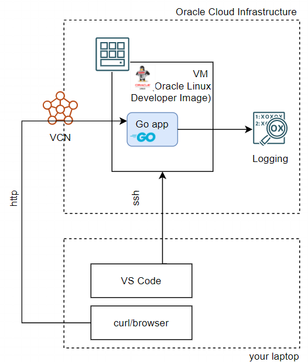
            </picture>

<p>This is the first installment in a five part series about Go and Oracle Cloud Infrastructure (OCI). This series discusses how Go applications can be created and run on OCI - in Compute Instances (VMs), containerized on Kubernetes, or as serverless Functions. The articles show how to automate the build and deployment of these Go applications using OCI DevOps. An important topic is how to use OCI services from Go applications - both those running on OCI as well as Go code running elsewhere. Some of the OCI services discussed are Object Storage, Streaming, Key Vault and Autonomous Database.</p>

<p>In order to follow along with these articles, readers should have at least basic knowledge of how to create Go applications. It is assumed that readers have access to their own Go development environment. Some of the examples and screenshots will specifically mention VS Code as development tool. However, other editors and IDEs can be used as well. The Go code presented in these articles demonstrates a number of mechanisms in their simplest form for maximum clarity and with the least dependencies. Readers should not expect meaningful functionality or production ready code.</p>

<p>The articles describe how to get Going on OCI and try out the examples. Readers will need to have access to an OCI tenancy with permissions to create the OCI resources discussed in these articles. Most of the resources used are available in the <em>Always Free Tier</em> (Compute Instance, VCN, Autonomous Database, Object Storage, Logging, Resource Manager) or have a free allotment tier for limited monthly usage (Functions, API Gateway, Streaming, Vault, DevOps).</p>

<p>You’ll need an Oracle Cloud Infrastructure Free Tier account. <a href="https://signup.cloud.oracle.com/?language=en&amp;sourceType=:ow:de:te::::RC_WWMK211116P00260:DotBuildGetStarted&amp;intcmp=:ow:de:te::::RC_WWMK211116P00260:DotBuildGetStarted">Start for Free</a>.</p>

<h2 id="going-on-oci">Going on OCI</h2>

<p>The first objective is to create a Compute Instance (a VM) on OCI and create and run a Go application in it. This simple Go application handles HTTP requests from outside the OCI tenancy. Subsequently, the logging from this Go application is channeled into the OCI Logging service where it is available for monitoring and analysis purposes.</p>

<p>The steps in this article:</p>

<ul>
  <li>create an OCI Compute Instance and set up Network Security List rules</li>
  <li>create a Go application in the new Compute Instance and run it to handle HTTP requests</li>
  <li>extend the application to produce logging; then route this logging into the OCI Logging service</li>
</ul>

<p>The final state at the end of the article is shown in the next figure.</p>

<figure class="aligncenter">
              <picture>
                  <source srcset="assets/way-to-go-on-oci-1-end-of-article1.png 1x" />
                  
              </picture>
              <figcaption>End state - Go application running on OCI Compute Instance</figcaption>
            </figure>

<h3 id="create-and-configure-an-oci-compute-instance">Create and configure an OCI Compute Instance</h3>

<p>OCI offers a wide range in Compute Instances – from bare metal to virtual and from fairly small and always free to quite substantial in terms of CPU and memory resources and associated costs. For the purpose of this article, we can use an always free shape for the VM. The image selected is <em>Oracle Linux Cloud Developer 8</em>, which comes with a wide range of tools and runtimes preinstalled. We will need to associate the Compute Instance with a VCN (a virtual cloud network) and a public subnet – either preexisting ones or to be created along with the new compute instance.</p>

<p>A public IP address is requested for the compute instance to allow external consumers to access the HTTP endpoint on which the Go application will process requests, and also to allow an SSH connection to create and run the application in the first place. Note: for serious activities, use of a Bastion server or hands-off operations through automated processes is recommended. An SSH Key Pair is generated and associated with the VM; we need the private key half of this pair in order to establish the SSH connection to the VM.</p>

<p>To keep your OCI tenancy well organized and have a good overview of the resources created for these <em>Go on OCI</em> explorations, I recommend creating a dedicated compartment. These are free, can easily be created and allow fine grained administration. The compartment used in the examples below is called <em>go-on-oci</em>.</p>

<figure class="aligncenter">
              <picture>
                  <source srcset="assets/way-to-go-on-oci-1-create-compartment.png 1x" />
                  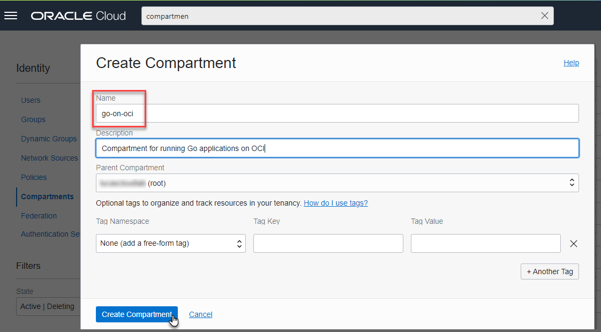
              </picture>
              <figcaption>Create Compartment</figcaption>
            </figure>

<h4 id="create-compute-instance">Create Compute Instance</h4>

<p>Open the OCI console in your browser. Switch to the compartment in which you intend to create the Compute Instance.</p>

<p>Type <em>instance</em> in the search bar. A popup appears that shows a heading <em>Services</em> and below the link <em>Instances</em>.</p>

<figure class="aligncenter">
              <picture>
                  <source srcset="assets/way-to-go-on-oci-1-search-instances.png 1x" />
                  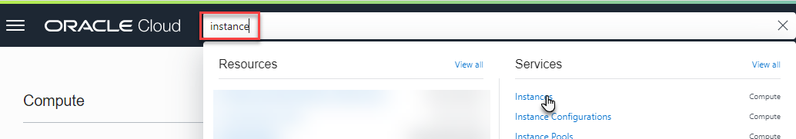
              </picture>
              <figcaption>Navigate to Compute Instance through the search box in the console</figcaption>
            </figure>

<p>Click this link. It takes you to an overview of the Compute Instances currently present in the compartment. Click on the button <em>Create Instance</em>.</p>

<figure class="aligncenter">
              <picture>
                  <source srcset="assets/way-to-go-on-oci-1-create-instance.png 1x" />
                  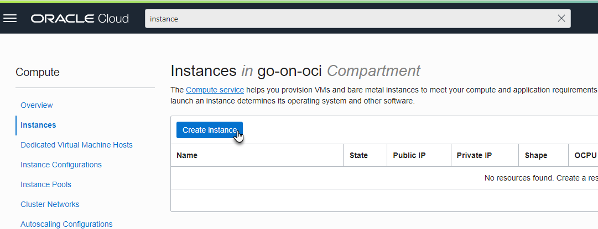
              </picture>
              <figcaption>Create a new Compute Instance</figcaption>
            </figure>

<p>A simple wizard for <em>Create Compute Instance</em> is presented. It is a form that allows you to provide the specifications for the compute instance you want to  provision.</p>

<p>First, give it a name; for example <em>go-app-vm</em>. Verify that the indicated compartment is indeed the correct one.</p>

<p>Unless you have a reason to customize the <em>Placement</em> settings you can accept the defaults.</p>

<figure class="aligncenter">
              <picture>
                  <source srcset="assets/way-to-go-on-oci-1-create-instance-edit-image-shape.png 1x" />
                  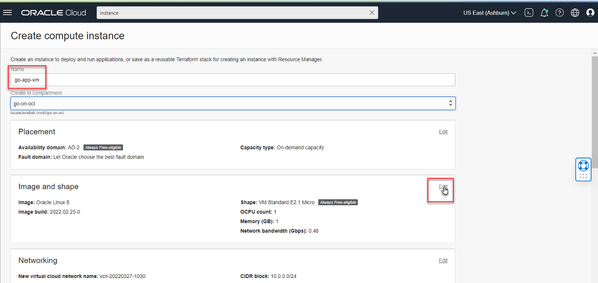
              </picture>
              <figcaption>Define name and edit shape for new Compute Instance</figcaption>
            </figure>

<p>Click on the <em>Edit</em> link in the <em>Image and Shape</em> section. Next, click on the button <em>Change image</em>. A list of available VM images appears. Mark the checkbox for the image <em>Oracle Linux Cloud Developer</em>. Read the Terms of Use for the image and mark the checkbox to indicate you have reviewed the document. Click on <em>Select image</em>.</p>

<figure class="aligncenter">
              <picture>
                  <source srcset="assets/way-to-go-on-oci-1-create-instance-select-image.png 1x" />
                  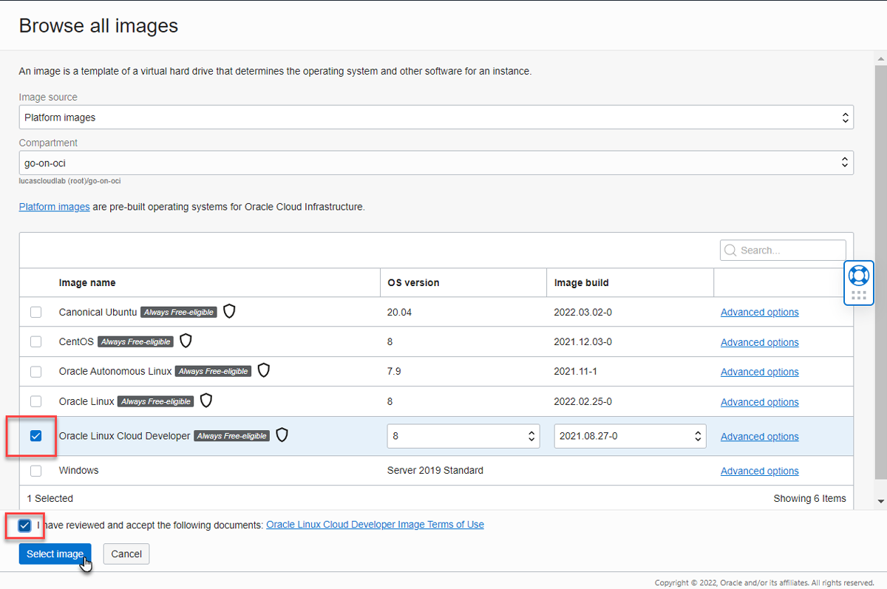
              </picture>
              <figcaption>Select the image for the new Compute Instance</figcaption>
            </figure>

<p>The shape selected by default – always free eligible AMD VM.Standard.E2.1.Micro – is fine, so no need to change it.</p>

<p>Next, turn your attention to the <em>Networking</em> settings. The default settings are acceptable. However, if you want to specify better names for the new VCN and subnet or associate the new VM with an existing VCN and (public) subnet, then click on the <em>Edit</em> link and define the appropriate settings. Make sure that a public IP address will be assigned.</p>

<figure class="aligncenter">
              <picture>
                  <source srcset="assets/way-to-go-on-oci-1-create-instance-network.png 1x" />
                  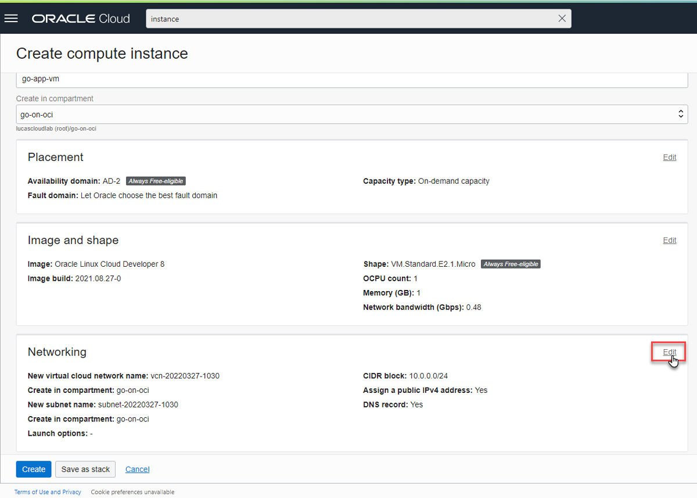
              </picture>
              <figcaption>Go and edit the network for the new Compute Instance</figcaption>
            </figure>

<p>In order to connect to the VM once it is running we need to be able to establish an SSH connection. An SSH key pair is used to authenticate our connection to the VM. The VM has the public key and we need the private key to encrypt messages to the VM. Click on <em>Save Private Key</em> in order to download this private key to a local file. You will need this file later on, so make sure to hang on to it. You do not need the public key.</p>

<p>The default Boot Volume settings are acceptable, so we can skip this section.</p>

<p>You are now ready to have the Compute Instance provisioned. Click on <em>Create</em> to start this action.</p>

<figure class="aligncenter">
              <picture>
                  <source srcset="assets/way-to-go-on-oci-1-create-instance-keypair-boot-done.png 1x" />
                  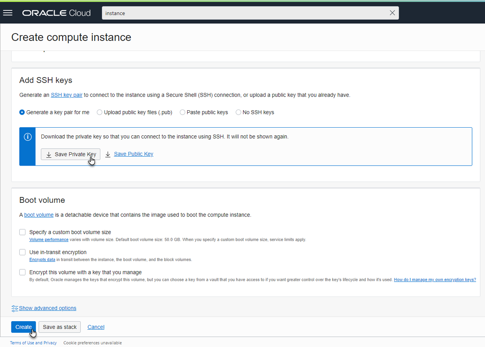
              </picture>
              <figcaption>Generate and download an SSH keypair to access the instance</figcaption>
            </figure>

<p>When you press the <em>Create</em> button, there will be a small pause while OCI accepts your provisioning request. Then a page is presented that shows the Provisioning (in progress) overview.</p>

<figure class="aligncenter">
              <picture>
                  <source srcset="assets/way-to-go-on-oci-1-create-instance-provisioning.png 1x" />
                  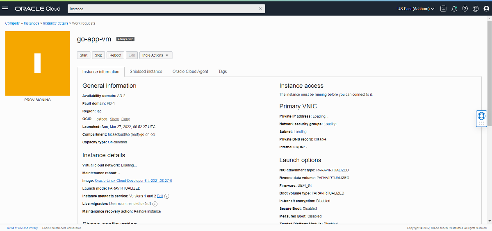
              </picture>
              <figcaption>Instance is in the process of being provisioned</figcaption>
            </figure>

<p>After a little while – typically within 1–2 minutes – the Compute Instance is running and the page is refreshed with the runtime details. This page contains the public IP address for the new VM. You’ll need this value.</p>

<figure class="aligncenter">
              <picture>
                  <source srcset="assets/way-to-go-on-oci-1-create-instance-running-vm.png 1x" />
                  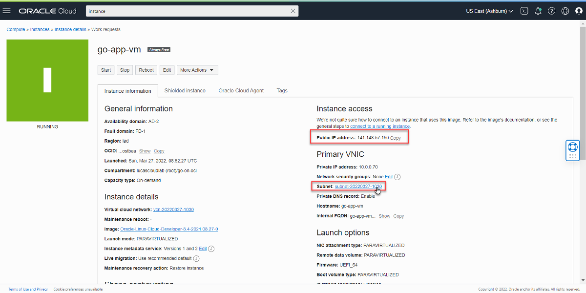
              </picture>
              <figcaption>New Compute Instance is up and running</figcaption>
            </figure>

<p>From this page, you can perform administrative tasks - such as stop, reboot, terminate, audit, add to instance pool, configure agents and create a custom image for additional VMs.</p>

<h4 id="configure-rules-in-subnet-security-list">Configure Rules in Subnet Security List</h4>

<p>In order to allow the necessary network traffic to and from the VM, we need to configure a few rules in the Security List for the Subnet to which the VM is connected. In order to do so, click on the subnet link on the Compute Instance overview page. Alternatively, type <em>virtual</em> in the OCI console’s search bar, navigate to <em>Virtual Cloud Network</em>, click on the VCN created or selected for the VM, and click on the relevant subnet.</p>

<figure class="aligncenter">
              <picture>
                  <source srcset="assets/way-to-go-on-oci-1-security-list-subnet.png 1x" />
                  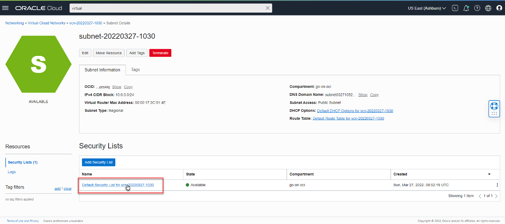
              </picture>
              <figcaption>Update the security list for the public subnet attached to the VM</figcaption>
            </figure>

<p>Click on the security list for the subnet.</p>

<p>Two categories of rules can be defined: <em>Ingress</em> rules that govern traffic coming into the VM and <em>Egress</em> rules for traffic that goes out of the VM. We need the following types of traffic allowed:</p>

<ul>
  <li><em>Ingress</em>: port 22 - SSH connection from our development environment (public internet)</li>
  <li><em>Ingress</em>: port 8080 (or any other port that we select) - HTTP requests from external consumers of the HTTP server we will implement in Go</li>
</ul>

<figure class="aligncenter">
              <picture>
                  <source srcset="assets/way-to-go-on-oci-1-security-list-subnet-overview.png 1x" />
                  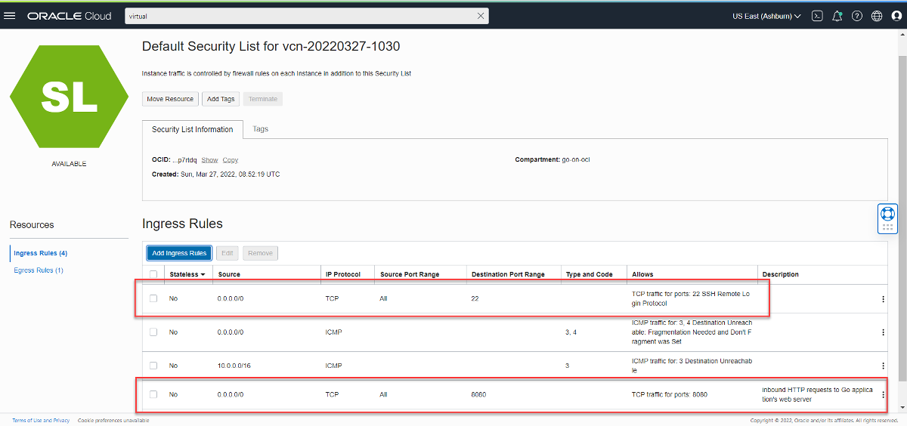
              </picture>
              <figcaption>Ingress Rules in the security list - for incoming SSH connections and TCP requests on port 8080</figcaption>
            </figure>

<ul>
  <li><em>Egress</em>: port 443 - outbound HTTPS traffic for fetching Go modules (for example with <code class="language-plaintext highlighter-rouge">go get</code> or <code class="language-plaintext highlighter-rouge">go mod download</code> ) and performing <code class="language-plaintext highlighter-rouge">git</code> commands (including <code class="language-plaintext highlighter-rouge">git clone</code>)</li>
</ul>

<p>Depending on whether you used an existing subnet or had a new one set up when the VM was created, you may need to configure some or all of these rules.</p>

<blockquote class="notice">
  <p>Note: use <code class="language-plaintext highlighter-rouge">0.0.0.0/0</code> as the Source CIDR in all cases.</p>
</blockquote>

<p>The next image shows creation of an Ingress rule for allowing incoming TCP traffic on port 8080, from any originating network address or port.</p>

<figure class="aligncenter">
              <picture>
                  <source srcset="assets/way-to-go-on-oci-1-security-list-subnet-rules.png 1x" />
                  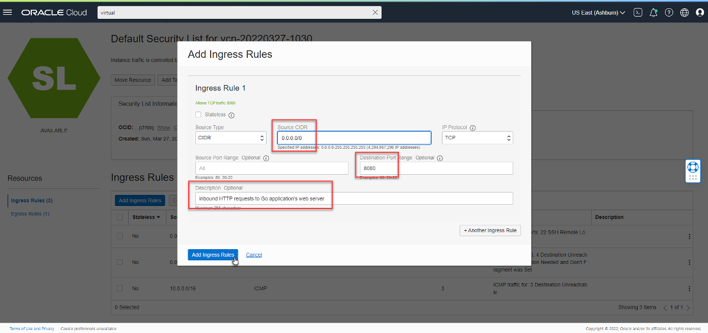
              </picture>
              <figcaption>Defining the ingress rule for inbound TCP requests on port 8080</figcaption>
            </figure>

<h4 id="connect-to-compute-instance-with-ssh">Connect to Compute Instance with SSH</h4>

<p>There are various tools available that make managing SSH sessions very simple, such as MobaXTerm and Putty. From a Linux command line, the most straightforward way to open an SSH connection is probably:</p>

<ol>
  <li>
    <p>Copy the downloaded private key file to current directory</p>
  </li>
  <li>
    <p>Change the accessibility of the private key file</p>

    <div class="language-console highlighter-rouge"><div class="highlight"><pre class="highlight"><code><span class="gp"> chmod 400 &lt;private key file&gt;</span><span class="w">
</span></code></pre></div>    </div>
  </li>
  <li>
    <p>Initiate the SSH session:</p>

    <div class="language-console highlighter-rouge"><div class="highlight"><pre class="highlight"><code><span class="gp"> ssh –i &lt;private key file&gt;</span><span class="w"> </span>opc@&lt;public ip address of instance&gt;
</code></pre></div>    </div>
  </li>
</ol>

<p>And to celebrate the success of making the connection, we could do a little looking around in our new OCI Compute Instance. For example, check what versions are available in the VM of some language runtimes:</p>

<div class="language-console highlighter-rouge"><div class="highlight"><pre class="highlight"><code><span class="go">git version
go version
java -version
node -v
python --version
terraform -version
oci --version
</span></code></pre></div></div>

<p>You could even create a very simple first Go application inside the VM and run it as well.</p>

<p>Type <code class="language-plaintext highlighter-rouge">vi app.go</code> to bring up the editor (or alternatively use the <code class="language-plaintext highlighter-rouge">nano</code> or <code class="language-plaintext highlighter-rouge">vim</code> editor). Enter <em>Insert</em> mode by typing <code class="language-plaintext highlighter-rouge">i</code>. Paste or type this Go code into the editor:</p>

<div class="language-go highlighter-rouge"><div class="highlight"><pre class="highlight"><code><span class="k">package</span> <span class="n">main</span>
<span class="k">import</span> <span class="s">"fmt"</span>

<span class="k">func</span> <span class="n">main</span><span class="p">()</span> <span class="p">{</span>
    <span class="n">fmt</span><span class="o">.</span><span class="n">Println</span><span class="p">(</span><span class="s">"Hello You"</span><span class="p">)</span>
<span class="p">}</span>
</code></pre></div></div>

<p>Type <code class="language-plaintext highlighter-rouge">esc</code> followed by <code class="language-plaintext highlighter-rouge">:wq</code>. This writes the file content and returns you to the command line. You can now run this simplest of Go applications with:</p>

<div class="language-console highlighter-rouge"><div class="highlight"><pre class="highlight"><code><span class="go">go run app.go
</span></code></pre></div></div>

<p>The program is compiled and executed and the output will appear. You are now officially <em>going on OCI</em>.</p>

<h3 id="create-and-run-go-application-in-a-compute-instance">Create and Run Go application in a Compute Instance</h3>

<p>At this point, we have a running OCI Compute Instance that we can connect to via SSH from our local environment. The VM has a number of tools and language runtime environments that allow us to create, compile and run applications. We have prepared inbound network connectivity on port 8080 to the VM. Now let’s create a Go application that listens to inbound [HTTP] requests and serves them with a simple response.</p>

<h4 id="connect-to-compute-instance-via-vs-code-remote-ssh-extension-optional">Connect to Compute Instance via VS Code Remote SSH extension (optional)</h4>

<p>There are several tools that facilitate interaction with a remote server over SSH. You can, of course, pick the one you like best. One option that I have come to appreciate is an extension for Visual Studio Code: the Remote SSH Extension.</p>

<p>If you use VS Code and are interested in this extension, here are the steps to get started with it:</p>

<ol>
  <li>
    <p>Open the <em>Extensions</em> tab in VS Code. Type <em>ssh</em> in the search bar. A list of extensions will appear with the <em>Remote SSH</em> extension at or near the top.</p>

    <picture class="aligncenter">
             <source srcset="assets/way-to-go-on-oci-1-vscode-remotessh-extension.png 1x" />
             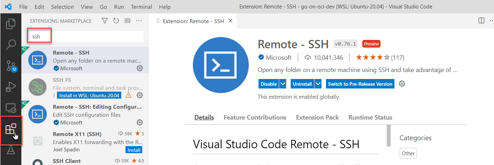
         </picture>
  </li>
  <li>
    <p>Install the extension.</p>
  </li>
  <li>
    <p>Click on the Remote SSH FS icon. Then click on the icon to create a new SSH FS connection.</p>

    <picture class="aligncenter">
             <source srcset="assets/way-to-go-on-oci-1-vscode-remotessh-createnewconnection.png 1x" />
             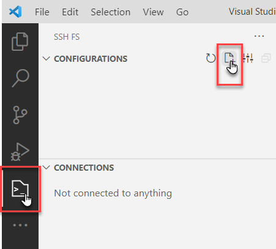
         </picture>
  </li>
  <li>
    <p>Provide the name for the new configuration - for example <em>go-on-oci</em> - and click on <em>Save</em></p>

    <picture class="aligncenter">
             <source srcset="assets/way-to-go-on-oci-1-vscode-remotessh-namenewconfig.png 1x" />
             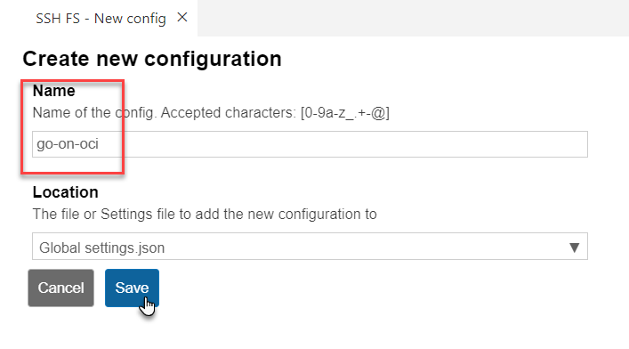
         </picture>

    <p>A form is presented in which you provide details for the Compute Instance:  the host’s public IP address and SSH port (22), the username (which is <em>opc</em> on Oracle Linux images such as the one used for the Compute Instance), and the private key file.</p>

    <picture class="aligncenter">
             <source srcset="assets/way-to-go-on-oci-1-remote-ssh-edit-configuration.png 1x" />
             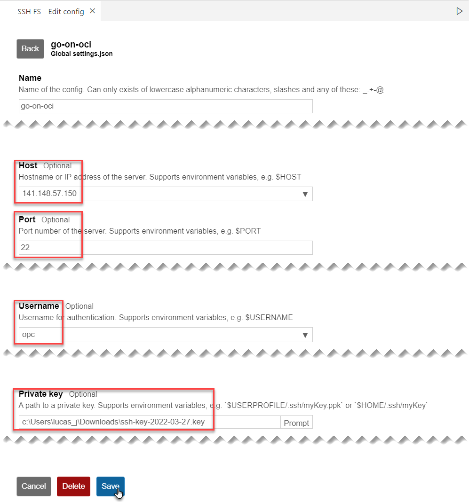
         </picture>

    <p>(this screenshot only contains the relevant fields; you can ignore other aspects of the configuration)</p>
  </li>
  <li>
    <p>Click on Save.</p>
  </li>
</ol>

<p>With this in place, you can open terminal windows on the OCI Compute Instance from within your local VS Code environment and also explore and manipulate the file system contents of the remote VM from inside VS Code.</p>

<figure class="aligncenter">
              <picture>
                  <source srcset="assets/way-to-go-on-oci-1-vscode-remotessh-opensshsession.png 1x" />
                  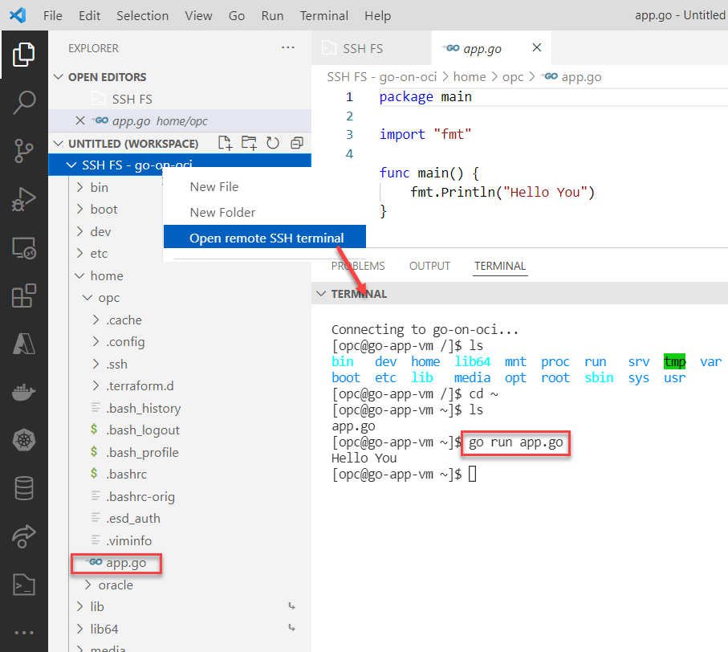
              </picture>
              <figcaption>Open Remote Terminal Session on OCI Compute Instance</figcaption>
            </figure>

<p>Apart from the obvious latency, developing against the remote Compute Instance on OCI is the same as working locally in VS Code.</p>

<h4 id="create-and-run-a-web-server-in-go-on-oci">Create and Run a Web Server in Go on OCI</h4>

<p>Create a new directory on the remote OCI Compute Instance, called <em>myserver</em> – either through the VS Code user interface or on the terminal command line with  <code class="language-plaintext highlighter-rouge">mkdir myserver</code>.</p>

<p>Create a file called <code class="language-plaintext highlighter-rouge">my-server.go</code>in this directory. Paste the following contents into this file:</p>

<div class="language-go highlighter-rouge"><div class="highlight"><pre class="highlight"><code><span class="k">package</span> <span class="n">main</span>

<span class="k">import</span> <span class="p">(</span>
    <span class="s">"fmt"</span>
    <span class="s">"log"</span>
    <span class="s">"net/http"</span>
<span class="p">)</span>

<span class="k">const</span> <span class="n">DEFAULT_HTTP_SERVER_PORT</span> <span class="o">=</span> <span class="s">"8080"</span>

<span class="k">func</span> <span class="n">greetHandler</span><span class="p">(</span><span class="n">response</span> <span class="n">http</span><span class="o">.</span><span class="n">ResponseWriter</span><span class="p">,</span> <span class="n">request</span> <span class="o">*</span><span class="n">http</span><span class="o">.</span><span class="n">Request</span><span class="p">)</span> <span class="p">{</span>
    <span class="n">log</span><span class="o">.</span><span class="n">Printf</span><span class="p">(</span><span class="s">"Handle Request for method %s on path %s"</span><span class="p">,</span> <span class="n">request</span><span class="o">.</span><span class="n">Method</span><span class="p">,</span> <span class="n">request</span><span class="o">.</span><span class="n">URL</span><span class="o">.</span><span class="n">Path</span><span class="p">)</span>
    <span class="k">if</span> <span class="n">request</span><span class="o">.</span><span class="n">Method</span> <span class="o">!=</span> <span class="s">"GET"</span> <span class="p">{</span>
        <span class="n">http</span><span class="o">.</span><span class="n">Error</span><span class="p">(</span><span class="n">response</span><span class="p">,</span> <span class="s">"Method is not supported."</span><span class="p">,</span> <span class="n">http</span><span class="o">.</span><span class="n">StatusNotFound</span><span class="p">)</span>
        <span class="k">return</span>
    <span class="p">}</span>
    <span class="n">name</span> <span class="o">:=</span> <span class="s">"Stranger"</span>
    <span class="n">queryName</span> <span class="o">:=</span> <span class="n">request</span><span class="o">.</span><span class="n">URL</span><span class="o">.</span><span class="n">Query</span><span class="p">()</span><span class="o">.</span><span class="n">Get</span><span class="p">(</span><span class="s">"name"</span><span class="p">)</span>
    <span class="k">if</span> <span class="nb">len</span><span class="p">(</span><span class="n">queryName</span><span class="p">)</span> <span class="o">&gt;</span> <span class="m">0</span> <span class="p">{</span>
        <span class="n">name</span> <span class="o">=</span> <span class="n">queryName</span>
        <span class="n">log</span><span class="o">.</span><span class="n">Printf</span><span class="p">(</span><span class="s">" --  query parameter name is set to %s"</span><span class="p">,</span> <span class="n">name</span><span class="p">)</span>
    <span class="p">}</span>
    <span class="n">fmt</span><span class="o">.</span><span class="n">Fprintf</span><span class="p">(</span><span class="n">response</span><span class="p">,</span> <span class="s">"Hello %s!"</span><span class="p">,</span> <span class="n">name</span><span class="p">)</span>
<span class="p">}</span>

<span class="k">func</span> <span class="n">fallbackHandler</span><span class="p">(</span><span class="n">response</span> <span class="n">http</span><span class="o">.</span><span class="n">ResponseWriter</span><span class="p">,</span> <span class="n">request</span> <span class="o">*</span><span class="n">http</span><span class="o">.</span><span class="n">Request</span><span class="p">)</span> <span class="p">{</span>
    <span class="n">log</span><span class="o">.</span><span class="n">Printf</span><span class="p">(</span><span class="s">"Warning: Request for unhandled method %s on path %s"</span><span class="p">,</span> <span class="n">request</span><span class="o">.</span><span class="n">Method</span><span class="p">,</span> <span class="n">request</span><span class="o">.</span><span class="n">URL</span><span class="o">.</span><span class="n">Path</span><span class="p">)</span>
    <span class="n">http</span><span class="o">.</span><span class="n">Error</span><span class="p">(</span><span class="n">response</span><span class="p">,</span> <span class="s">"404 path/method combination not supported."</span><span class="p">,</span> <span class="n">http</span><span class="o">.</span><span class="n">StatusNotFound</span><span class="p">)</span>
    <span class="k">return</span>
<span class="p">}</span>

<span class="k">func</span> <span class="n">main</span><span class="p">()</span> <span class="p">{</span>
    <span class="n">fileServer</span> <span class="o">:=</span> <span class="n">http</span><span class="o">.</span><span class="n">FileServer</span><span class="p">(</span><span class="n">http</span><span class="o">.</span><span class="n">Dir</span><span class="p">(</span><span class="s">"./website"</span><span class="p">))</span>
    <span class="n">http</span><span class="o">.</span><span class="n">Handle</span><span class="p">(</span><span class="s">"/site/"</span><span class="p">,</span> <span class="n">http</span><span class="o">.</span><span class="n">StripPrefix</span><span class="p">(</span><span class="s">"/site/"</span><span class="p">,</span> <span class="n">fileServer</span><span class="p">))</span>
    <span class="n">http</span><span class="o">.</span><span class="n">HandleFunc</span><span class="p">(</span><span class="s">"/greet"</span><span class="p">,</span> <span class="n">greetHandler</span><span class="p">)</span>
    <span class="n">http</span><span class="o">.</span><span class="n">HandleFunc</span><span class="p">(</span><span class="s">"/"</span><span class="p">,</span> <span class="n">fallbackHandler</span><span class="p">)</span>

    <span class="n">log</span><span class="o">.</span><span class="n">Printf</span><span class="p">(</span><span class="s">"Starting server at port %s</span><span class="se">\n</span><span class="s">"</span><span class="p">,</span> <span class="n">DEFAULT_HTTP_SERVER_PORT</span><span class="p">)</span>
    <span class="k">if</span> <span class="n">err</span> <span class="o">:=</span> <span class="n">http</span><span class="o">.</span><span class="n">ListenAndServe</span><span class="p">(</span><span class="s">":"</span><span class="o">+</span><span class="n">DEFAULT_HTTP_SERVER_PORT</span><span class="p">,</span> <span class="no">nil</span><span class="p">);</span> <span class="n">err</span> <span class="o">!=</span> <span class="no">nil</span> <span class="p">{</span>
        <span class="n">log</span><span class="o">.</span><span class="n">Fatal</span><span class="p">(</span><span class="n">err</span><span class="p">)</span>
    <span class="p">}</span>
<span class="p">}</span>
</code></pre></div></div>

<p>This Go program will start an HTTP Server that listens on port 8080 for incoming requests. Requests with the path <code class="language-plaintext highlighter-rouge">/site</code> are handled by the static content handler that returns files from the local <em>website</em> directory (which does not exist yet). Requests with the path <code class="language-plaintext highlighter-rouge">/greet</code> are handled by the <code class="language-plaintext highlighter-rouge">greetHandler</code> function. This function will return a response with a friendly <em>Hello</em>, followed by either the value of the query parameter <code class="language-plaintext highlighter-rouge">name</code> or the hardcoded string <code class="language-plaintext highlighter-rouge">Stranger</code>. Other requests are handled in the <code class="language-plaintext highlighter-rouge">fallbackHandler</code> function, which returns a 404 HTTP StatusNotFound result.</p>

<p>Under directory <code class="language-plaintext highlighter-rouge">myserver</code>, create a subdirectory called <code class="language-plaintext highlighter-rouge">website</code>. Create file <code class="language-plaintext highlighter-rouge">index.html</code> in this subdirectory and paste the following content to this file:</p>

<div class="language-html highlighter-rouge"><div class="highlight"><pre class="highlight"><code><span class="nt">&lt;html&gt;</span>
  <span class="nt">&lt;head&gt;</span>
    <span class="nt">&lt;title&gt;</span>My Website<span class="nt">&lt;/title&gt;</span>
  <span class="nt">&lt;/head&gt;</span>
  <span class="nt">&lt;body&gt;</span>
    <span class="nt">&lt;h2&gt;</span>My Website full of interesting things<span class="nt">&lt;/h2&gt;</span>
  <span class="nt">&lt;/body&gt;</span>
<span class="nt">&lt;/html&gt;</span>
</code></pre></div></div>

<picture class="aligncenter">
                <source srcset="assets/way-to-go-on-oci-1-remotessh-go-webserver.png 1x" />
                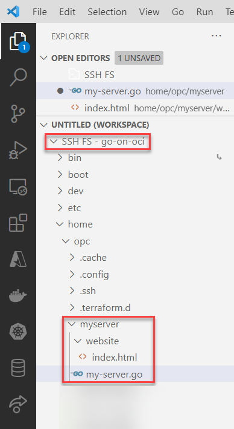
            </picture>

<p>Our Web Server is now ready for some action… or so it would seem. However, the Oracle Linux image we are using for the VM is configured to reject any inbound network request (resulting in “Route to host not found” error messages). This is an element of security hardening that comes on top of the Network Security List rules that we discussed earlier. In order to make the operating system accept the inbound requests for port 8080, you need to execute the following commands:</p>

<div class="language-console highlighter-rouge"><div class="highlight"><pre class="highlight"><code><span class="go">sudo firewall-cmd  --permanent --zone=public --add-port=8080/tcp
sudo firewall-cmd  --reload
</span></code></pre></div></div>

<p>And now the Web Server can really get <em>going</em>. Execute this command to run the application:</p>

<div class="language-console highlighter-rouge"><div class="highlight"><pre class="highlight"><code><span class="go">go run my-server.go
</span></code></pre></div></div>

<p>After a few seconds – compilation, initialization – the application is running, as you can tell from the logging.</p>

<h4 id="access-the-go-web-server">Access the Go Web Server</h4>

<p>Try to access the Web Server from your local environment, using a curl command :</p>

<div class="language-console highlighter-rouge"><div class="highlight"><pre class="highlight"><code><span class="gp">curl &lt;public IP address for Compute Instance&gt;</span>:8080/greet?name<span class="o">=</span>Your+Name
</code></pre></div></div>

<figure class="aligncenter">
              <picture>
                  <source srcset="assets/way-to-go-on-oci-1-go-webserver-response-on-commandline.png 1x" />
                  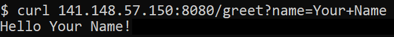
              </picture>
              <figcaption>Service call with curl and response on command line</figcaption>
            </figure>

<p>or in a web browser with this URL:</p>

<div class="language-plaintext highlighter-rouge"><div class="highlight"><pre class="highlight"><code>http://&lt;public IP address for Compute Instance&gt;:8080/greet?name=YourNameOrSomeoneElses
</code></pre></div></div>

<p>and:</p>

<div class="language-plaintext highlighter-rouge"><div class="highlight"><pre class="highlight"><code>http://&lt;public IP address for Compute Instance&gt;:8080/site/index.html
</code></pre></div></div>

<p>The response should come in, and the logging from the Go application should also indicate that the request that was handled.</p>

<figure class="aligncenter">
              <picture>
                  <source srcset="assets/way-to-go-on-oci-1-go-webserver-response-in-browser.png 1x" />
                  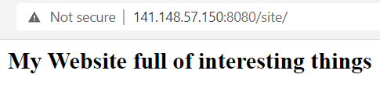
              </picture>
              <figcaption>Service response in a browser window</figcaption>
            </figure>

<h2 id="connect-go-application-to-oci-logging-service">Connect Go application to OCI Logging service</h2>

<p>The Go application <em>my-server</em> writes log entries to mark important activities such as starting up the HTTP Server and handling individual HTTP requests. Currently, this logging is written to the standard output. During development, that might be useful. However, for code that runs inside a cloud based compute instance – a VM that runs by itself – it is less useful to write logging to this standard output.</p>

<p>OCI provides facilities for collecting, monitoring, and analyzing logging from OCI-managed resources, as well as custom code running on OCI in a consistent way in a generic, all-encompassing environment. OCI Logging ingests log entries from files written in VMs, containers, serverless functions in addition to the logging produced by the OCI services themselves.</p>

<p>In order to make our Go application’s custom logging part of OCI Logging, we will update the Go application to write logging to a file. Subsequently, we will create the configuration on OCI required to feed this logging into the Logging service.</p>

<p>Modify the code in <code class="language-plaintext highlighter-rouge">my-server.go</code>. Add the function:</p>

<div class="language-go highlighter-rouge"><div class="highlight"><pre class="highlight"><code><span class="k">func</span> <span class="n">initLogging</span><span class="p">()</span> <span class="p">(</span><span class="n">logfile</span> <span class="o">*</span><span class="n">os</span><span class="o">.</span><span class="n">File</span><span class="p">)</span> <span class="p">{</span>
    <span class="n">syslogWriter</span><span class="p">,</span> <span class="n">e</span> <span class="o">:=</span> <span class="n">syslog</span><span class="o">.</span><span class="n">New</span><span class="p">(</span><span class="n">syslog</span><span class="o">.</span><span class="n">LOG_NOTICE</span><span class="p">,</span> <span class="s">"greet-app"</span><span class="p">)</span>
    <span class="k">if</span> <span class="n">e</span> <span class="o">==</span> <span class="no">nil</span> <span class="p">{</span>
        <span class="n">log</span><span class="o">.</span><span class="n">SetOutput</span><span class="p">(</span><span class="n">syslogWriter</span><span class="p">)</span>
    <span class="p">}</span> <span class="k">else</span> <span class="p">{</span>
        <span class="n">log</span><span class="o">.</span><span class="n">Println</span><span class="p">(</span><span class="n">e</span><span class="p">)</span>
    <span class="p">}</span>
    <span class="n">log</span><span class="o">.</span><span class="n">SetFlags</span><span class="p">(</span><span class="n">log</span><span class="o">.</span><span class="n">Ldate</span> <span class="o">|</span> <span class="n">log</span><span class="o">.</span><span class="n">Lmicroseconds</span> <span class="o">|</span> <span class="n">log</span><span class="o">.</span><span class="n">Llongfile</span><span class="p">)</span>
    <span class="n">log</span><span class="o">.</span><span class="n">SetPrefix</span><span class="p">(</span><span class="s">"greet-app: "</span><span class="p">)</span>
    <span class="n">log</span><span class="o">.</span><span class="n">Println</span><span class="p">(</span><span class="s">"Logging initialized upon application restart"</span><span class="p">)</span>
    <span class="k">return</span> <span class="n">logfile</span>
<span class="p">}</span>
</code></pre></div></div>

<p>Add an import of module <em>os</em>:</p>

<div class="language-go highlighter-rouge"><div class="highlight"><pre class="highlight"><code><span class="k">import</span> <span class="p">(</span>
    <span class="s">"fmt"</span>
    <span class="s">"log"</span>
    <span class="s">"log/syslog"</span>
    <span class="s">"net/http"</span>
    <span class="s">"os"</span>    
<span class="p">)</span>
</code></pre></div></div>

<p>and add a call to <em>initLogging()</em> as first line in function <em>main</em> :</p>

<div class="language-go highlighter-rouge"><div class="highlight"><pre class="highlight"><code><span class="k">func</span> <span class="n">main</span><span class="p">()</span> <span class="p">{</span>
    <span class="n">initLogging</span><span class="p">()</span>
    <span class="o">...</span>
</code></pre></div></div>

<p>Run the application again:</p>

<div class="language-console highlighter-rouge"><div class="highlight"><pre class="highlight"><code><span class="go">go run my-server.go
</span></code></pre></div></div>

<p>This time, we will not get any feedback on the command line from the application. It is still writing log output, but now it is sent to the Linux syslog. Verify if logging is indeed still being produced using the following command on a different terminal into the OCI Compute Instance:</p>

<div class="language-console highlighter-rouge"><div class="highlight"><pre class="highlight"><code><span class="go">sudo tail -f /var/log/messages
</span></code></pre></div></div>

<p>This will show a live feed of all system log messages, including those produced by <em>my-server</em>.</p>

<h3 id="configure-custom-logging-from-compute-instance">Configure Custom Logging from Compute Instance</h3>

<p>There are a few hoops to jump through in order to get the logging written inside the compute instance from the Go application loaded into OCI Logging. The next diagram gives an overview of these steps. In short:</p>

<ul>
  <li>the Compute Instance needs permission to send logs to the Logging service; this is handled through a Dynamic Group and a Policy</li>
  <li>a Log Group needs to be set up to provide a container for the log that the compute instance will write to</li>
  <li>an Agent Configuration needs to be created that is associated with the Dynamic Group (for the Compute Instance), a custom Log (in the Log Group), and the log file path /var/log/* from which the logs are to be ingested</li>
  <li>the Management Agent plugin needs to be enabled in the Compute Instance’s Oracle Cloud Agent configuration</li>
</ul>

<figure class="aligncenter">
              <picture>
                  <source srcset="assets/way-to-go-on-oci-1-oci-logging-design.png 1x" />
                  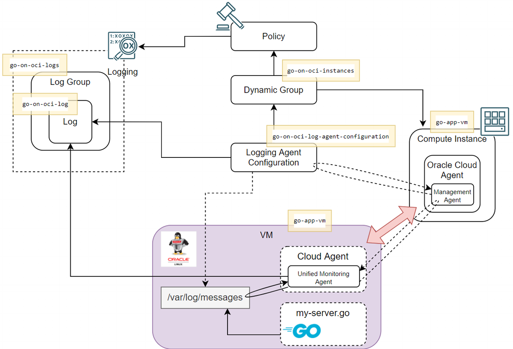
              </picture>
              <figcaption>Configuration of logging agents, settings and related policies</figcaption>
            </figure>

<h4 id="1-dynamic-group-go-on-oci-instances">1. Dynamic Group go-on-oci-instances</h4>

<p>In order to create the Dynamic Group for all Compute Instances in the Compartment, we need the OCID (the Oracle Cloud [resource] Identifier) for the Compartment. To get it, type <em>comp</em> in the search bar. Click on the link <em>Compartments</em> in the Services section. This will list all visible compartments. Locate the compartment that contains the Compute Instance that you created earlier. Hover your mouse over the value for the compartment in the <em>OCID</em> column. Click on the <em>Copy</em> link to move the OCID into the clipboard.</p>

<picture class="aligncenter">
                <source srcset="assets/way-to-go-on-oci-1-compartment-ocid.png 1x" />
                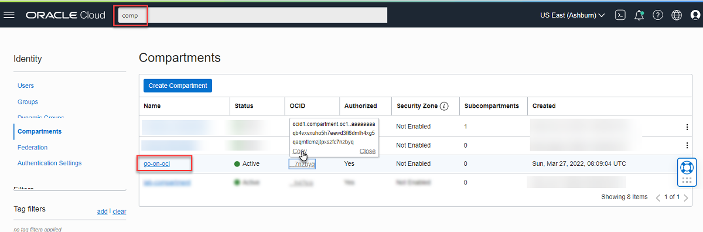
            </picture>

<p>Type <em>dyn</em> in the search bar. Click on <em>Dynamic Groups</em>. Click on the button <em>Create Dynamic Group</em>.</p>

<picture class="aligncenter">
                <source srcset="assets/way-to-go-on-oci-1-create-dynamic-group.png 1x" />
                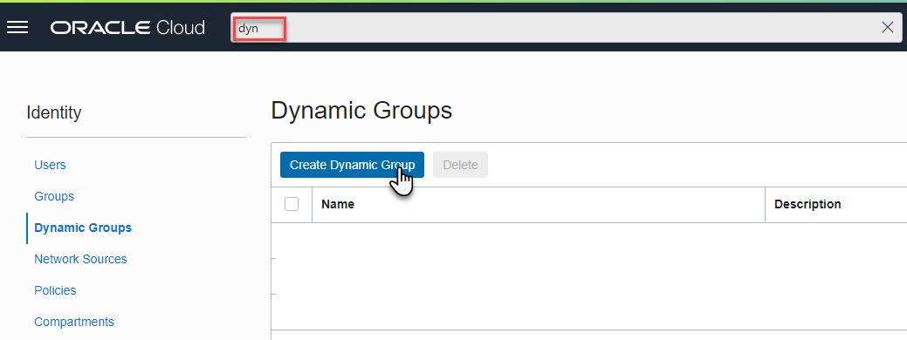
            </picture>

<p>Enter the name for the Dynamic Group – e.g. <em>go-on-oci-instances</em> – and optionally type a description. Define the following rule which selects all compute instances which are part of the compartment (in this case only the compute instance <em>go-app-vm</em>):</p>

<div class="language-plaintext highlighter-rouge"><div class="highlight"><pre class="highlight"><code>instance.compartment.id = '&lt;compartment_id&gt;'
</code></pre></div></div>

<p>Then press <em>Create</em>.</p>

<figure class="aligncenter">
              <picture>
                  <source srcset="assets/way-to-go-on-oci-1-define-dynamic-group.png 1x" />
                  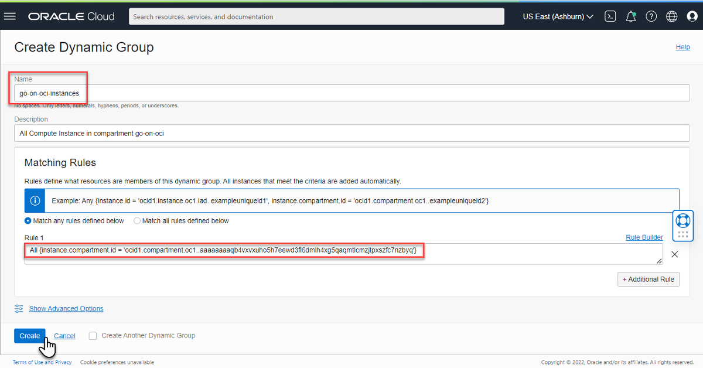
              </picture>
              <figcaption>Define Dynamic Group for Compute Instances</figcaption>
            </figure>

<h4 id="2-create-log-group-go-on-oci-logs">2. Create Log Group go-on-oci-logs</h4>

<p>Create the log group in OCI Logging. A log group is a logical container for organizing logs. All logs to be generated are associated with a log group.</p>

<p>Type <em>log g</em> in the OCI console’s search bar. Click on the link <em>Log Groups</em> in the Services section of the panel that is shown. An overview page is shown listing all Log Groups in the compartment.</p>

<picture class="aligncenter">
                <source srcset="assets/way-to-go-on-oci-1-loggroups-overview.png 1x" />
                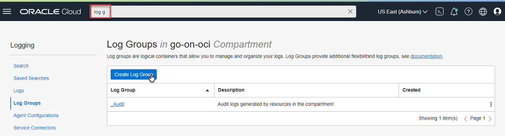
            </picture>

<p>Click on the button <em>Create Log Group</em>.</p>

<p>Creating a Log Group is very straightforward: provide a name and optionally a description. I have called the log group <em>go-on-oci-logs</em>; however, any name will do.</p>

<picture class="aligncenter">
                <source srcset="assets/way-to-go-on-oci-1-loggroups-overview.png 1x" />
                
            </picture>

<h4 id="3-create-the-custom-log-and-logging-agent-configuration">3. Create the Custom Log and Logging Agent Configuration</h4>

<p>To have the custom logs from the Go application on the Compute Instance sent to the Log Group, we need to create a Custom Log Agent Configuration. This Agent Configuration is an instruction for agents running on the Compute Instances about collecting log entries from specific files and sending them to a custom log in a Log Group. An Agent Configuration associates one or more dynamic groups (identifying  compute instances) on which the specific log files should be ingested into the Log Group.</p>

<p>Type <em>log</em> in the OCI Console searchbar. Click on the <em>Logs</em> link in the <em>Services</em> section. This takes you to the Logs page. Click on the button <em>Create Custom Log</em>.</p>

<picture class="aligncenter">
                <source srcset="assets/way-to-go-on-oci-1-create-custom-log.png 1x" />
                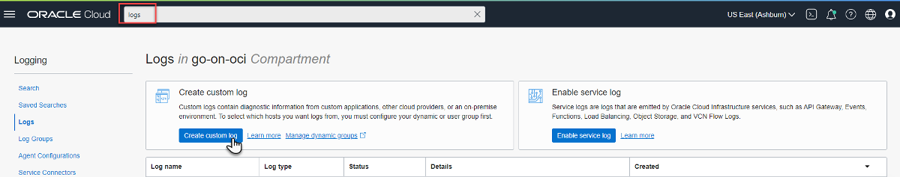
            </picture>

<p>You now enter a two-step wizard for defining the Custom Log and Agent Configuration. Enter the name for the custom log, for example <code class="language-plaintext highlighter-rouge">go-on-oci-log</code>. The compartment should be set correctly – if not, select the compartment that contains the Log Group you have created in the previous section. If not already set, also select the Log Group you have just created.</p>

<picture class="aligncenter">
                <source srcset="assets/way-to-go-on-oci-1-create-custom-log-page1.png 1x" />
                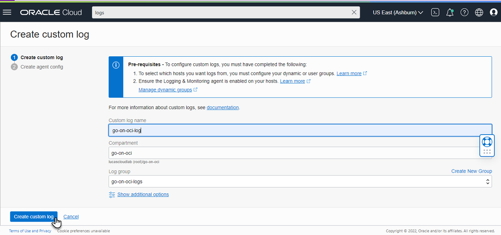
            </picture>

<p>Click on the button <em>Create Custom Log</em> to move to the next page.</p>

<p>The second page collects details on the Agent Configuration.</p>

<p>Type the name of the configuration, for example <em>go-on-oci-log-agent-configuration</em>. Optionally provide a description, such as <em>Configuration for log agent to collect Linux system logs from compute instances in dynamic group</em>.</p>

<p>The <em>Group Type</em> should be set to <em>Dynamic group</em>. Select the Dynamic Group <em>go-on-oci-instances</em> that you created earlier. Now click on the button <em>Create</em> to create a policy for allowing the compute instances in the dynamic group to interact with the OCI Logging service.</p>

<figure class="aligncenter">
              <picture>
                  <source srcset="assets/way-to-go-on-oci-1-create-custom-log-page2a.png 1x" />
                  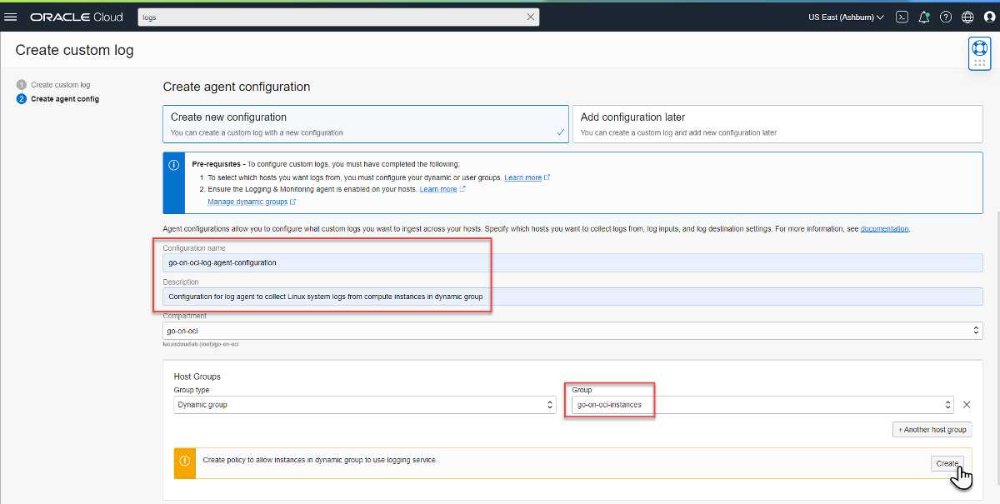
              </picture>
              <figcaption>Name and association of custom log to (dynamic group with) Compute Instances</figcaption>
            </figure>

<p>A message is presented with the name of and a link to the policy that was created. Its policy statement says <em>allow dynamic-group go-on-oci-instances to use log-content in tenancy</em>.</p>

<p>Set the <em>Input type</em> to <em>Log path</em>. Type a value for <em>Input name</em>, such as <em>linuxsystemlog</em>. Add the <em>File path</em> <code class="language-plaintext highlighter-rouge">/var/log/*</code>.</p>

<blockquote class="notice">
  <p>Note: multiple file paths can be defined for ingesting log files from.</p>
</blockquote>

<p>The fields under the heading <em>Log Destination</em> will already be set; these specify the Custom Log in the Log Group and Compartment that were selected on the previous page.</p>

<figure class="aligncenter">
              <picture>
                  <source srcset="assets/way-to-go-on-oci1-create-custom-log-page2b.png 1x" />
                  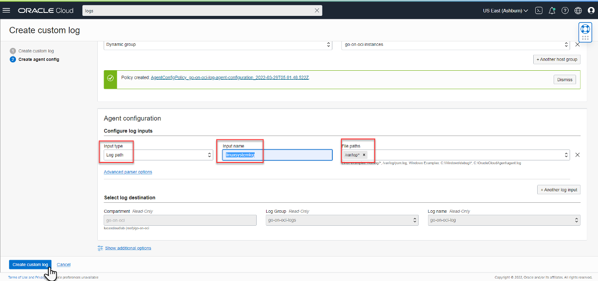
              </picture>
              <figcaption>Configure Input on Compute Instance for Custom Log</figcaption>
            </figure>

<p>Click on the button <em>Create Custom Log</em> to create the <em>Agent Configuration</em>.</p>

<h4 id="4-enable-the-management-agent-plugin-in-the-compute-instance">4. Enable the Management Agent plugin in the compute instance</h4>

<p>The <em>Agent Configuration</em> has been created. It applies to the Cloud Agent running inside the Compute Instance that runs the Go application. However, before that agent will actually sent any logs, we have to ensure that the <em>Management Agent</em> plugin is activated. Oracle Cloud Agent is a lightweight process that manages plugins running on compute instances. Plugins collect performance metrics, install OS updates, and perform other instance management tasks. Not all plugins are automatically activated. More details on the Cloud Agent and these plugins can be found in the <a href="https://docs.oracle.com/en-us/iaas/Content/Compute/Tasks/manage-plugins.htm">OCI Documentation on Cloud Agent</a></p>

<p>Type <em>instance</em> in the search bar in the console. Navigate to <em>Instances</em>. Drill down to the instance created earlier for running the Go application. Switch to the tab <em>Oracle Cloud Agent</em>. Compute Instances based on one of the predefined OCI images - like the Oracle Linux Developer image used for this instance - contain the Oracle Cloud Agent. This is a lightweight process that manages plugins running on the instance. Plugins collect performance metrics, install OS updates, and perform other instance management tasks. The <em>Management Agent</em> plugin needs to be enabled. It is this plugin that collects log entries inside the compute instance and sends them to OCI Logging.</p>

<p>Enable the <em>Management Agent</em> plugin if it is not currently enabled. It may take some time for this plugin to go from <em>disabled</em> via status <em>Starting</em> to status <em>Running</em>.</p>

<picture class="aligncenter">
                <source srcset="assets/way-to-go-on-oci-1-enable-agent.png 1x" />
                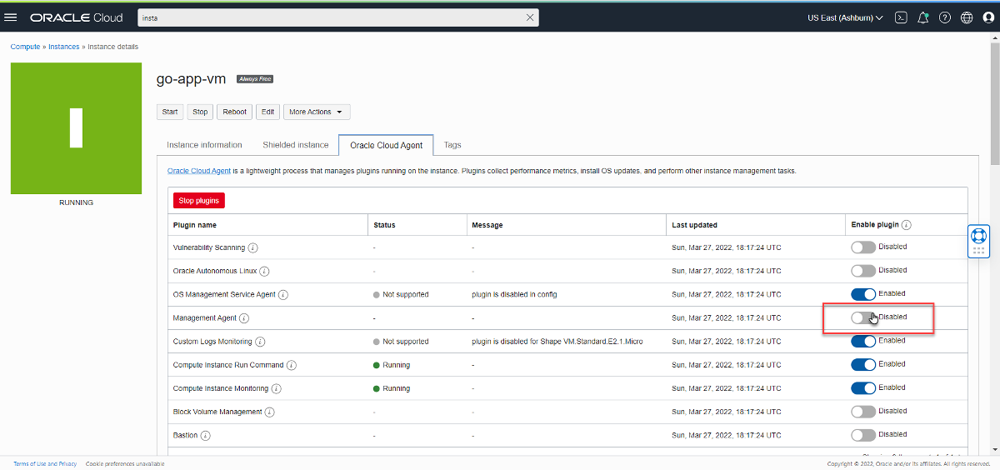
            </picture>

<p>Once the plugin has the status <em>Running</em>, it will read new log entries to the files in <em>/var/log/</em> and send them to the custom log <em>go-on-oci-log</em> in the Log Group <em>go-on-oci-logs</em>.</p>

<p>To check on the status of the monitoring agent from within the VM, you can execute the statement in a remote SSH session to the Compute Instance:</p>

<div class="language-console highlighter-rouge"><div class="highlight"><pre class="highlight"><code><span class="go">systemctl status unified-monitoring-agent
</span></code></pre></div></div>

<p>The output should indicate that agent – a Fluentd based data collector for OCI – is running.</p>

<picture class="aligncenter">
                <source srcset="assets/way-to-go-on-oci-1-logging-agent-running-in-vm.png 1x" />
                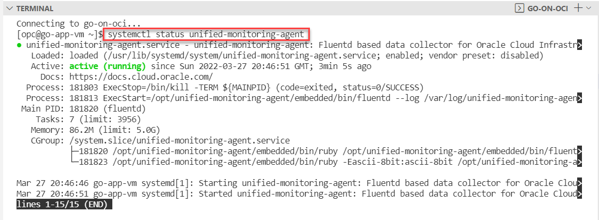
            </picture>

<h4 id="5-explore-logs-from-go-application-in-oci-logging">5. Explore logs from Go Application in OCI Logging</h4>

<p>The logging agent will scrape and forward new log entries from the system logs in <code class="language-plaintext highlighter-rouge">/var/log</code>. The Go application writes its logging to the system logs, which means to <code class="language-plaintext highlighter-rouge">/var/log/messages</code>.</p>

<p>Now <em>make some noise</em> by starting the my-server application if it is not still running and making some HTTP requests to the <code class="language-plaintext highlighter-rouge">/greet</code> path and/or the <code class="language-plaintext highlighter-rouge">/site</code> path. It will take 1-2 minutes before the logs that result from these requests are available in the Log Explorer in the OCI Console.</p>

<p>To take a look at the logs in the console, type <em>log</em> in the search bar. Then click on Logs.</p>

<figure class="aligncenter">
              <picture>
                  <source srcset="assets/way-to-go-on-oci-1-navigate-to-log-explorer.png 1x" />
                  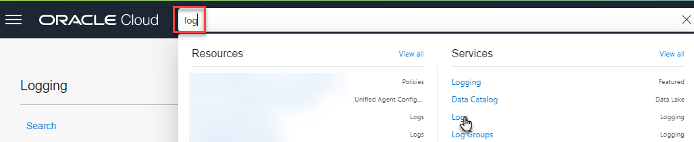
              </picture>
              <figcaption>Navigate to OCI Logging service resources</figcaption>
            </figure>

<p>The Logs in the compartment are shown. Click on the link for <em>go-on-oci-log</em> (or whatever name you assigned to the log).</p>

<p>This takes you to the Log Explorer - a page for browsing and searching through the log entries.</p>

<figure class="aligncenter">
              <picture>
                  <source srcset="assets/way-to-go-on-oci-1-log-explorer.png 1x" />
                  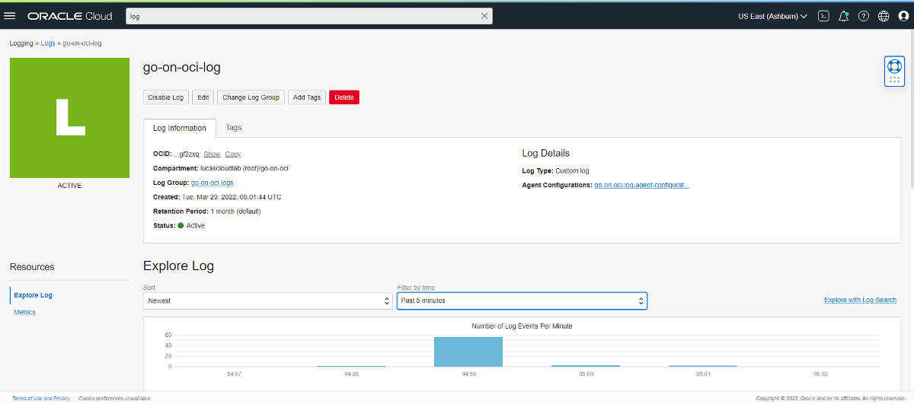
              </picture>
              <figcaption>Log Explorer providing overview of recently collected logs</figcaption>
            </figure>

<p>When you scroll down, there is a table with the most recently ingested log entries. In this table will be various Linux system log messages alongside the output from the my-server application.</p>

<figure class="aligncenter">
              <picture>
                  <source srcset="assets/way-to-go-on-oci-1-log-explorer-table-of-entries.png 1x" />
                  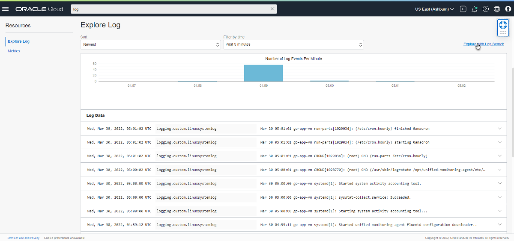
              </picture>
              <figcaption>Table with log entries, collected from the Compute Instance</figcaption>
            </figure>

<p>To track down the specific log output from <em>my-server</em>, we can search for the log prefix assigned in the Go code: <em>greet-app:</em>. Click on the link <em>Explore with Log Search</em>. The Log Search panel is shown.</p>

<p>Enter the string <em>greet-app:</em> in the field <em>Custom Filters</em> and press enter. This string is now a search filter. Press the <em>Search</em> button to perform search over the indicated time range of log entries for this filter.</p>

<figure class="aligncenter">
              <picture>
                  <source srcset="assets/way-to-go-on-oci-1-log-entries-from-my-server.png 1x" />
                  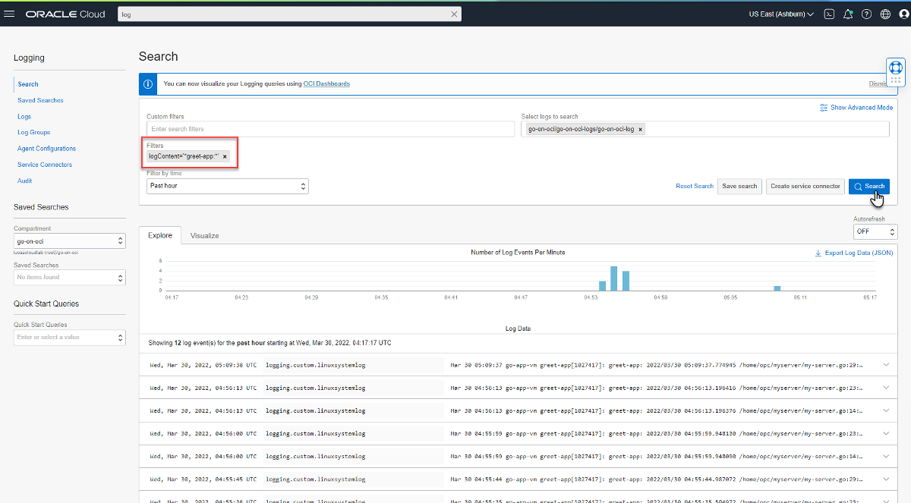
              </picture>
              <figcaption>Filtering for log entries with prefix greet-app</figcaption>
            </figure>

<p>The log entries can be expanded for closer inspection. Details are shown for when and where this entry was ingested and how it is stored in the OCI Logging service. The source (instance), source file and type are indicated as well.</p>

<figure class="aligncenter">
              <picture>
                  <source srcset="assets/way-to-go-on-oci-1-log-entry-expanded.png 1x" />
                  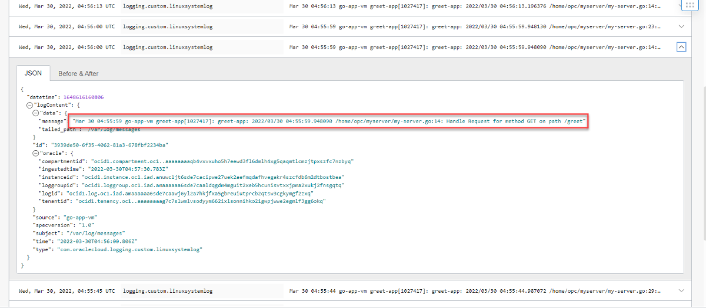
              </picture>
              <figcaption>Inspecting full details for a log entry</figcaption>
            </figure>

<p>There are three timestamps available - one produced by the Go application, one from the Linux system log handler, and one from the Logging agent at the time of scraping the log entry. The delta between the first two is not meaningful and the application really does not have to add the timestamp. The difference between the second and third should be small. The fourth timestamp – when the log record was created in the OCI Log and  became available for scrutiny – is not shown. It would not add meaning to the log entry.</p>

<p>Note: The Cloud Agent is capable of parsing log entries. This means that a log entry does not end up as a single long string in OCI Logging, but instead is parsed into individual fields which can be queried using the Logging Query Language. Logging from Go in JSON or CSV format to application-specific logfiles instead of system logs can easily be done. However, on the Always Free Tier Compute Instance shape used in this article, the ability to parse custom logs is not available – neither parsing these logs nor even reading custom log files.</p>

<h2 id="conclusion">Conclusion</h2>

<p>In this article, we took the first few steps with Go on OCI.</p>

<p>After provisioning a Compute Instance based on the Oracle Linux Cloud Developer image, we had to set the right network security rules in order to allow outbound traffic (https to fetch modules and perform git operations) and inbound traffic (SSH connection and incoming HTTP requests). Through an SSH connection and using the Go runtime available the VM, we created a simple HTTP Server that can be invoked from anywhere on the public internet. The final stage of the article discussed configuration of logging facilities that enabled the flow of application log entries to the OCI Logging service. The Cloud Agent that is preinstalled in the Compute Instance was configured to scrape and forward the desired log entries.</p>

<p>In the next article, we will focus on automation of the software engineering process for a somewhat more complex Go application: how to use OCI DevOps for storing the source code, building the executable and storing it as deployable artifact, deploying that artifact to a Compute Instance, exposing an HTTP endpoint for that application through an OCI API Gateway and finally checking its health status after deployment. All using automated pipelines.</p>

<h2 id="resources">Resources</h2>

<ul>
  <li><a href="https://github.com/lucasjellema/go-on-oci-article-sources">Source code repository for the sources discussed in this article series</a></li>
  <li><a href="https://docs.oracle.com/en-us/iaas/Content/Compute/home.htm">Documentation on OCI Compute</a></li>
  <li><a href="https://docs.oracle.com/en-us/iaas/Content/Network/Concepts/securitylists.htm#Security_Lists">Document on OCI Networking - Security Lists</a></li>
  <li><a href="https://docs.oracle.com/en-us/iaas/oracle-linux/developer/index.htm#About-the-Oracle-Linux-Cloud-D">Oracle Linux Cloud Developer Image for Compute Instances</a></li>
  <li><a href="https://docs.oracle.com/en-us/iaas/Content/Logging/home.htm#top">Documentation on OCI Logging</a></li>
  <li><a href="https://docs.oracle.com/en-us/iaas/Content/Compute/Tasks/manage-plugins.htm">Documentation on OCI Cloud Agent</a></li>
  <li><a href="https://docs.oracle.com/en-us/iaas/Content/Identity/Tasks/managingdynamicgroups.htm">Documentation on OCI Dynamic Groups</a></li>
  <li><a href="https://code.visualstudio.com/docs/remote/ssh">VS Code - Remote Development using SSH</a></li>
</ul>


          <div class="sidebar sticky">
    <!-- <p><strong>Tags:</strong> <span class="tags">

            
            <a class="animated-link tag" href="/topics/open-source">open-source</a>
            <a class="animated-link tag" href="/topics/devops">devops</a>
            <a class="animated-link tag" href="/topics/get-started">get-started</a>
            <a class="animated-link tag" href="/topics/back-end">back-end</a>
            <a class="animated-link tag" href="/topics/go">go</a>
            </span>
    </p> -->
  


<div itemscope itemtype="https://schema.org/Person">

  

  <div class="author__content">
    
      <a href="https:/technology.amis.nl"><h3 class="author__name" itemprop="name">Lucas Jellema</h3></a>
    
    
      <div class="author__bio" itemprop="description">
        <p>developer, solution architect, blogger, Oracle Groundbreaker Ambassador, Oracle ACE Director</p>

      </div>
    
  </div>

  <div class="author__urls-wrapper">
    <ul class="author__urls social-icons">
      
        <li itemprop="homeLocation" itemscope itemtype="https://schema.org/Place">
          <i class="fas fa-fw fa-map-marker-alt" aria-hidden="true"></i> <span itemprop="name">The Netherlands</span>
        </li>
      

      

      

      
        <li>
          <a href="mailto:lucasjellema@gmail.com">
            <meta itemprop="email" content="lucasjellema@gmail.com" />
            <i class="fas fa-fw fa-envelope-square" aria-hidden="true"></i><span class="label">Email</span>
          </a>
        </li>
      

      

      
        <li>
          <a href="https://twitter.com/lucasjellema" itemprop="sameAs" rel="nofollow noopener noreferrer">
            <i class="fab fa-fw fa-twitter-square" aria-hidden="true"></i><span class="label">Twitter</span>
          </a>
        </li>
      

      

      
        <li>
          <a href="https://www.linkedin.com/in/lucasjellema" itemprop="sameAs" rel="nofollow noopener noreferrer">
            <i class="fab fa-fw fa-linkedin" aria-hidden="true"></i><span class="label">LinkedIn</span>
          </a>
        </li>
      

      

      

      

      

      
        <li>
          <a href="https://github.com/lucasjellema" itemprop="sameAs" rel="nofollow noopener noreferrer">
            <i class="fab fa-fw fa-github" aria-hidden="true"></i><span class="label">GitHub</span>
          </a>
        </li>
      

      

      

      

      

      

      

      

      

      

      

      

      

      

      
    </ul>
  </div>
</div>

  
  
  

  </div>


      </section>

      <footer class="page__meta">
        
        


        

  <p class="page__date"><strong><i class="fas fa-fw fa-calendar-alt" aria-hidden="true"></i> Updated:</strong> <time datetime="2022-12-12T11:00:00+00:00">December 12, 2022</time></p>


      </footer>
    </div>

  </article>
</div>

</div>

